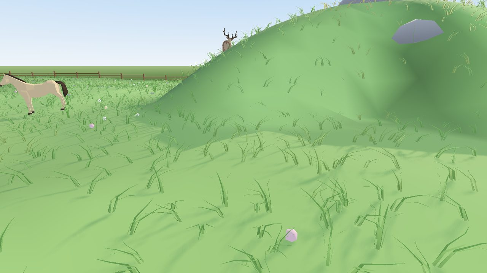
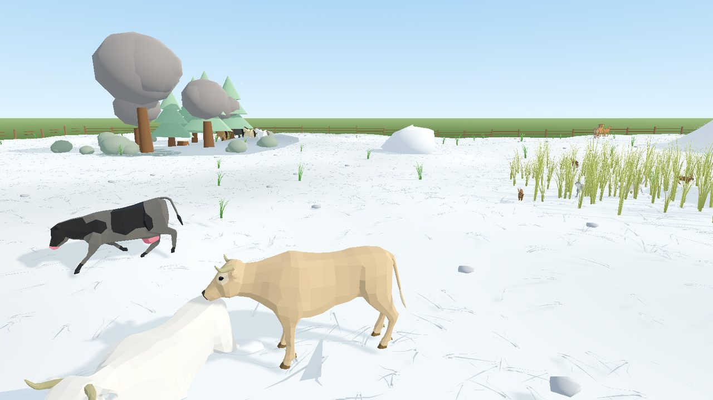
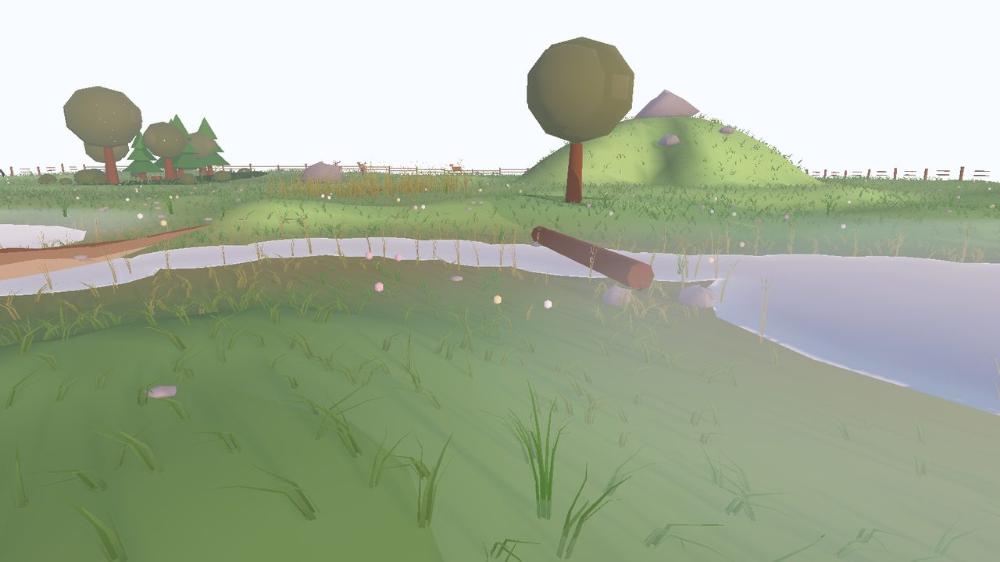
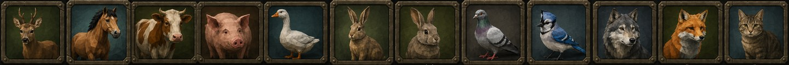

Linux — kdyby to hlásilo Permission denied, chybí právo ke spuštění:
chmod +x TheHide.x86_64. Potřebuje ovladače s Vulkanem; bez nich zkus
./TheHide.x86_64 --rendering-driver opengl3.
Co to je
Zero-player simulátor chování zvířat. Nesbíráš body a nikam nepostupuješ — stavíš louku
(kopce, rybníky, potoky, lesíky, krmítka), vkládáš do ní zvířata a pak sleduješ, co se stane.
Zvláštní na tom je, že vidíš zvířeti do hlavy: v pravém panelu běží jeho úvaha —
co právě zvažuje, jak si to boduje, co vidí, cítí a slyší, co si pamatuje a čeho se bojí.
Když husa uteče, dá se dohledat proč.
Ze hry
Pravý panel je jádro hry: vidíš, co zvíře zvažuje, jak si to boduje a proč se rozhodlo utéct.Stádo divokých koní. Každý kus má vlastní zbarvení a drží si od ostatních odstup.Husy na rybníku. Voda je pro ně útočiště — liška za nimi nepůjde.

Z kopce je dál vidět. Zvířata to vědí a chodí se tam rozhlížet.

Rok trvá šestnáct dnů. V zimě zamrzne rybník a tráva přestane růst.

Padlá kláda přes potok — jediná cesta pro toho, kdo neumí plavat.
Kdo na louce žije

Jelen, kůň divoký, kráva, prase, husa, zajíc, králík, holub a sojka — a proti nim vlk, liška a kočka.
Každý druh má vlastní smysly, rychlost, potravu a strach z ostatních.
Co všechno se v tom počítá
Zvíře se nerozhoduje podle scénáře. Každou chvíli si boduje,
co teď dává největší smysl, a vyhrává nejlepší nápad — proto se dva kusy stejného druhu
zachovají pokaždé jinak.
Smysly a paměť
Zrak má zorný kužel, dosah podle druhu a v noci se krátí. Z kopce je vidět dál,
při pastvě se hlava sklání a zvíře vidí míň. Porost a kopce výhled zaclánějí.
Čich nese vítr: predátora ucítíš proti větru, po větru skoro vůbec. Vodu je cítit
násobně dál, než je vidět — proto ji stádo najde, i když na ni nedohlédne.
Sluch podle hlučnosti: běžící zvíře, lov nebo syčící husa je slyšet i za zády
a přes porost. Sojka umí varovat celou louku.
Paměť míst: kde byla tráva, voda, úkryt — a kde mě honili. Vzpomínky slábnou,
ale napajedlo si zvíře pamatuje dlouho, protože rybník se nestěhuje.
Zvyknutí: na hluk, který se opakuje a nic po něm nepřijde, si zvíře zvykne.
Rozmnožování a mláďata
Páry u druhů, které je tvoří (husa, holub, sojka, liška, vlk). Vlčí smečka má
jen jeden pár. Vdovec půl dne truchlí, pak si hledá nového partnera.
Hnízdo je skutečný objekt s vejci — na stromě, u paty stromu, v porostu nebo v noře.
Pták na vejcích sedí, potřeby mu rostou pomaleji a odchází, až když už nemůže.
Když hnízdo nikdo nehřeje, vejce chladnou. Liška a kočka je vybírají a matka o tom ví.
Mláďata: koloušek a zajíček první den leží schovaní a matka je chodí navštěvovat.
Ptáčata a mláďata šelem se sama neuživí — rodič jim nosí potravu, a když je jich moc,
dostane nejdřív ten nejprůbojnější. Sirotek hladoví. Mládě v dešti bez úkrytu prochladne.
Učení: mládě přebírá od matky, kde je voda, úkryt a kde je nebezpečno.
Příbuznost: rodokmen se drží a příbuzní se nepáří.
Potrava a potřeby
Tráva je skutečná zásoba: spasené místo se dorůstá, v zimě neroste. Stádo,
které stojí moc dlouho na jednom místě, si ho vypase.
Voda: pije se z okraje, velké zvíře dosáhne z břehu dál než husa.
Napije se dosyta, ne jen na chvíli. Zamrzlý rybník pití nezastaví, jen zpomalí.
Lov: predátor si vybírá kořist podle druhu, vzdálenosti a toho, jestli je osamělá.
Plíží se, útočí zblízka, sprint mu dojde. Husy ho můžou zahnat, když jsou ve skupině.
Vlk nechá zbytek úlovku ležet a chodí se k němu vracet.
Hlad, žízeň, únava, potřeba společnosti, ostražitost, strach a páření rostou různě
rychle podle druhu a proti sobě soupeří.
Prostředí
Roční období: rok trvá ve výchozím nastavení šestnáct dnů (jde zkrátit i prodloužit). V zimě zamrzne rybník (husy tím ztrácejí
útočiště a vlk přejde po ledu), tráva neroste a stromy jsou holé.
Voda má hloubku: rybníkem neplavec neprojde a obchází ho, mělčinou a brodem projde
každý, proud v potoce unáší. Padlá kláda je pro neplavce jediná cesta přes tok.
Kopce mají místy sráz, který přeleze jen kočka. Z vrcholu je dál vidět.
Vítr a déšť se mění samy a jde je na chvíli převzít. Vítr rozhoduje o čichu.
Než se louka rozběhne
Nová louka: vybereš krajinu, velikost, startovní sadu zvířat a seed — a rovnou vidíš
náhled mapy, která se spustí. Rozehraná hra se ukládá sama, takže „Pokračovat“ tě vrátí,
kde jsi skončil.
Nastavení: celá obrazovka, svislá synchronizace, strop snímků, hlasitost, štítky,
ukazatele smyslů, proudění větru a délka dne i roku.
Životopis: u vybraného zvířete je záložka Život — kdy se narodilo, kdy dospělo,
kolik přečkalo zim, koho potkalo a o co přišlo.